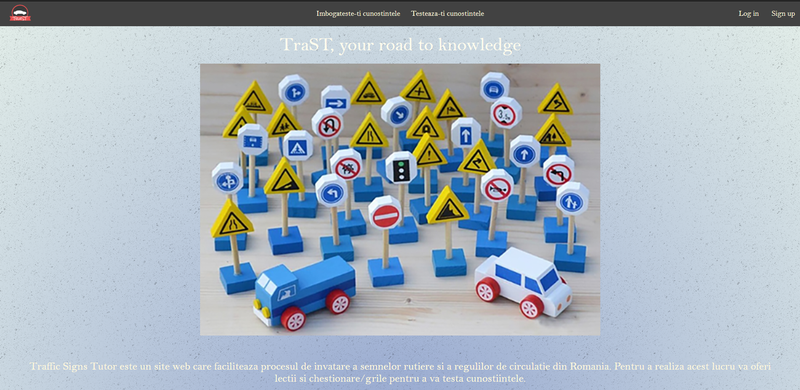
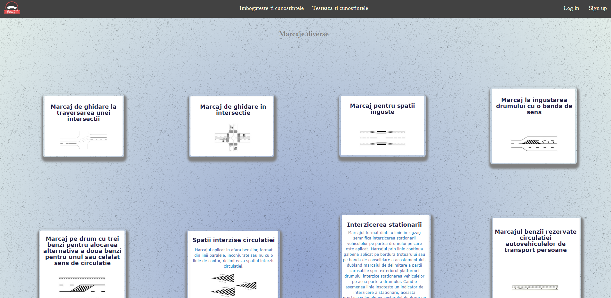
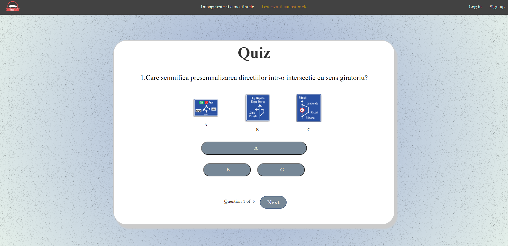
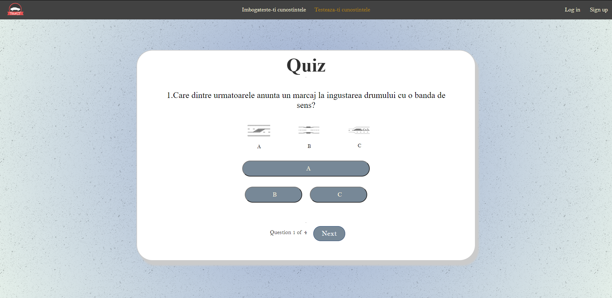
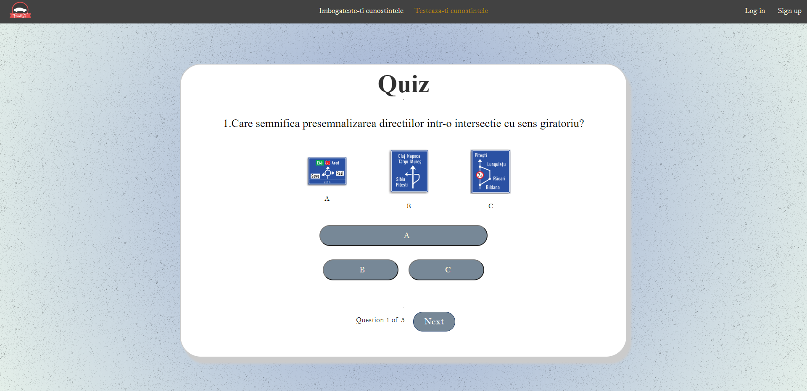
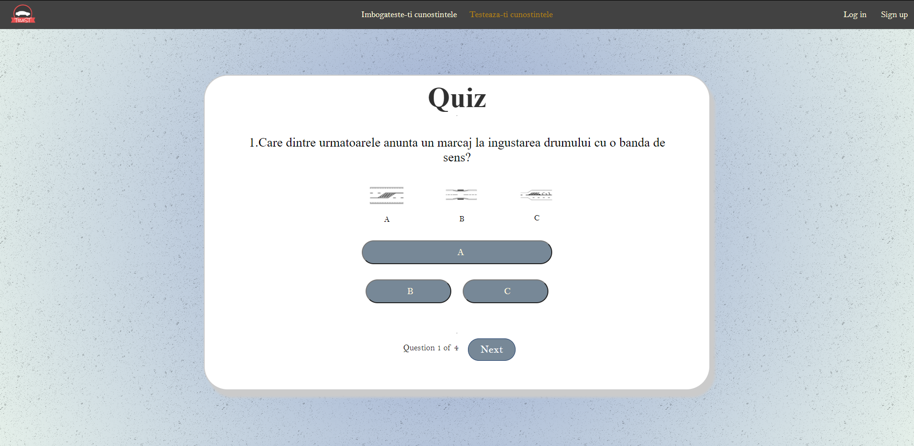

- 1.Abstract
- 2.Introducere
- 3.Home
- 4.Sign up
- 5.Log in
-
6.Imbogateste-ti cunostintele
-
6.1.Reguli de circulatie
- 6.1.1.SECTIUNEA 1 : Obligatiile participantilor la trafic
- 6.1.2.SECTIUNEA 2 : Reguli pentru circulatia vehiculelor
- 6.1.3.SECTIUNEA 3 : Reguli pentru alti participanti la trafic
- 6.1.4.SECTIUNEA 4 : Circulatia pe autostrazi
- 6.1.5.SECTIUNEA 5 : Obligatii in caz de accident
- 6.1.6.SECTIUNEA 6 : Circulatia autovehiculelor in traficul international
-
6.2.Semne de circulatie
- 6.2.1.Indicatoare de avertizare
- 6.2.2.Indicatoare de informare
- 6.2.3.Indicatoare de interzicere sau restrictie
- 6.3.4.Panouri aditionale
- 6.4.5.Indicatoare de informare turistica
- 6.5.6.Indicatoare de obligare
- 6.2.7.Indicatoare de orientare
- 6.2.8.Indicatoare de prioritate
- 6.2.9.Semnale luminoase
- 6.3.10.Indicatoare instalate la trecerea cu calea ferata
- 6.4.11.Indicatoare kilometrice
- 6.5.12.Indicatoare rutiere temporare
- 6.2.13.Mijloace auxiliare de semnalizare a lucrărilor
- 6.2.14.Marcaje longitudinale
- 6.2.15.Marcaje transversale
- 6.3.16.Marcaje diverse
- 6.4.17.Marcaje laterale
- 6.5.18.Semnalele polițistului rutier
-
6.1.Reguli de circulatie
-
7.Testeaza-ti cunostintele
-
7.1.Teste pe categorii
- 7.1.1.Test Indicatoare de avertizare
- 7.1.2.Test Indicatoare de informare
- 7.1.3.Test Indicatoare de interzicere sau restrictie
- 7.1.4.Test Indicatoare de obligare
- 7.1.5.Test Indicatoare de orientare
- 7.1.6.Test Indicatoare de prioritate
- 7.1.7.Test Indicatoare rutiere temporare
- 7.1.8.Test Marcaje diverse
- 7.1.9.Test Marcaje laterale si longitudinale
- 7.1.10.Test Marcaje transversale
- 7.2.Crezi ca stii din tot?(teste generale)
-
7.1.Teste pe categorii
- 8.Bara de navigatie
- 9.Butoane Utile
- 10.Rss Feed - Top 5 cei mai sargunciosi users
- 11.Profile
- 11.1.Modal pentru schimbarea datelor profilului
- 11.2.Modal pentru schimbarea parolei
- 11.3.Modal pentru schimbarea emailului
- 11.4.Progres categorii de semne
- 12.Logout
3.Home
Pagina de home a aplicatie

- O scurta prezentare a aplicatiei
- Buton de generare a RSS-ului continand topul
- Top 5 cei mai sargunciosi users
4.Sign up
Pagina de sign up:
- Forma pentru inregistrare
- Username = un nume pe care doresti sa-l ai in aplicatie
- Email = un email folosit pentru a te inregistra in aplicatie
- Password = parola cu care te vei conecta pe contul creat
- Confirmare Password = parola cu care te vei conecta pe contul creat
- Choose a country = alege tara din care provii
- Butonul Sign Up = buton de redirectionare catre pagina de succes daca inregistrarea a reusit
- Logeaza-te = buton de redirectionare catre pagina de logare daca ai cont
5.Log in
Pagina de autentificare:
- Forma pentru logare
- Username = numele de utilizator folosit la inregistrare
- Password = parola folosita la inregistrare
- Buton Login = buton de redirectionare catre aplicatie daca datele sunt corecte
- Creaza-ti un cont = buton de redirectionare catre pagina de sign up daca nu ai cont
6.Imbogateste-ti cunostintele
Se regaseste drept un dropdown in cadrul navbarului:
6.1.Reguli de circulatie
-
6.1.1.SECTIUNEA 1 : Obligatiile participantilor la trafic
-
6.1.2.SECTIUNEA 2 : Reguli pentru circulatia vehiculelor

-
6.1.3.SECTIUNEA 3 : Reguli pentru alti participanti la trafic
-
6.1.4.SECTIUNEA 4 : Circulatia pe autostrazi
-
6.1.5.SECTIUNEA 5 : Obligatii in caz de accident
-
6.1.6.SECTIUNEA 6 : Circulatia autovehiculelor in traficul international
6.2.Semne de circulatie
-
6.2.1.Indicatoare de avertizare
-
6.2.2.Indicatoare de informare

-
6.2.3.Indicatoare de interzicere sau restrictie
-
6.2.4.Panouri aditionale
-
6.2.5.Indicatoare de informare turistica
-
6.2.6.Indicatoare de obligare
-
6.2.7.Indicatoare de orientare
-
6.2.8.Indicatoare de prioritate
-
6.2.9.Semnale luminoase
-
6.2.10.Indicatoare instalate la trecerea cu calea ferata
-
6.2.11.Indicatoare kilometrice
-
6.2.12.Indicatoare rutiere temporare
-
6.2.13.Mijloace auxiliare de semnalizare a lucrărilor
-
6.2.14.Marcaje longitudinale
-
6.2.15.Marcaje transversale
-
6.2.16.Marcaje diverse

-
6.2.17.Marcaje laterale
-
6.2.18.Semnalele polițistului rutier
-
6.3.Categorie Parcursa
7.Testeaza-ti cunostintele
7.1.Teste pe categorii/h2>
-
7.1.1.Test Indicatoare de avertizare
-
7.1.2.Test Indicatoare de informare
-
7.1.3.Test Indicatoare de interzicere sau restrictie
-
7.1.4.Test Indicatoare de obligare

-
7.1.5.Test Indicatoare de orientare
-
7.1.6.Test Indicatoare de prioritate

-
7.1.7.Test Indicatoare rutiere temporare
-
7.1.8.Test Marcaje diverse

-
7.1.9.Test Marcaje laterale si longitudinale
-
7.1.10.Test Marcaje transversale
7.1.1.Test Indicatoare de avertizare
7.1.2.Test Indicatoare de informare
7.1.3.Test Indicatoare de interzicere sau restrictie
7.1.4.Test Indicatoare de obligare
7.1.5.Test Indicatoare de orientare
7.1.6.Test Indicatoare de prioritate
7.1.7.Test Indicatoare rutiere temporare
7.1.8.Test Marcaje diverse
7.1.9.Test Marcaje laterale si longitudinale
7.1.10.Test Marcaje transversale
7.2.Crezi ca stii din tot?(teste generale)
-
7.2.1.Test din semnele de circulatie
-
7.2.2.Test din regulile de circulatie
8.Bara de navigatie
8.1.Logo
8.2.Imbogateste-ti cunostintele

8.3.Teste

8.4.Log in
Apasand pe acest buton vei fi redirectionat la fereastra log in.

8.4.Logout
Apasand pe acest buton vei fi redirectionat la fereastra sign up.
9.ButoaneUtile
9.1.Butonul Sectiune parcursa

Acest buton se regaseste la sfarsitul fiecareii sectiuni de reguli de circulatie si apasandu-l sectiunea marcata va fi contorizata ca parcursa.
9.2.Butonul Categorie parcursa

Acest buton se regaseste la sfarsitul fiecareii categorii de semne de circulatie apasandu-l categoria marcata va fi contorizata ca parcursa
9.3.Butonul Marcheaza Progres

Acest buton se regaseste la sfarsitul fiecarui test si apasandu-l scorul testului curecnt va fi salvat
>10.Rss Feed - Top 5 cei mai sargunciosi users
RSS este o familie de formate de fluxuri web, realizate în format XML și folosite pentru Web syndication.
10.1.Butonul RSS
Se va realiza exportarea unui fisier cu date RSS continand topul cu 5 cei mai sargunciosi users
11.Profil
11.1.Modal pentru schimbarea datelor profilului

Acesta contine date ale utilizatorului : Nume, Prenume, Nickname,hobby si varsta si ofera posibiltatea de a fi schimbate.
11.2.Modal pentru schimbarea parolei

Ofera posibilitatea de schimbare a parolei pe baza celei actuale si a emailului.
11.3.Modal pentru schimbarea emailului

<
Ofera posibilitatea de schimbare a emailului pe baza celei actual si a parolei.
11.4.Progres categorii de semne
Tabelul contine informatii de parcurgere a categoriilor de semne
12.Logout
Apasand pe acest buton un user se va deconecta.